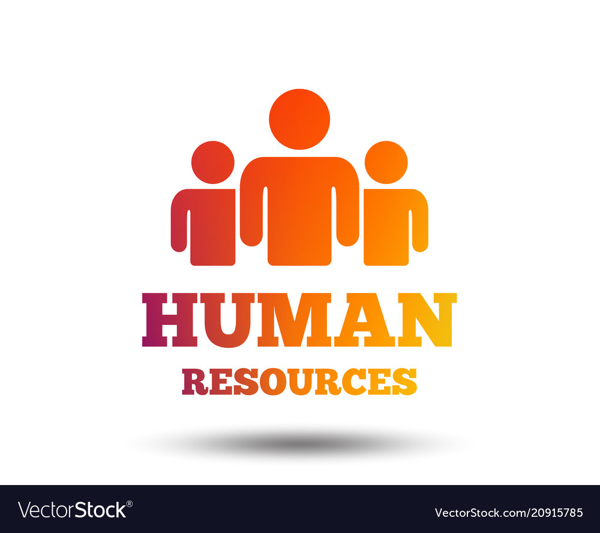

Aastha Saumya joined Rocket Learning on July 17, 2022, after a particularly disappointing day. Usually, she barely opened social media, but that day she found herself on LinkedIn. She spotted an opening for a fundraising and communications associate position at Rocket Learning and applied, eager to start anew.
During the interview process, the team recognized her specialization in human resources and suggested the HR Manager position instead. Passionate about working with people and improving workplaces, Aastha accepted. What began as a bad day turned into a pivotal moment in her career.
"When people are financially invested, they want a return. When people are emotionally invested, they want to contribute."
 Read More